Tamanho da fonte
Reconhecer as linguagens de programação utilizadas para o desenvolvimento de jogos digitais.
Vamos iniciar os estudos?
PlayAssista ao vídeo abaixo para uma introdução aos seus estudos
Quais os principais conceitos que se deve saber para lidar com dados em jogos?
Banco de Dados é um conceito fundamental na tecnologia da informação, referindo-se a sistemas organizados para coletar, armazenar, gerenciar e recuperar dados de maneira eficiente.
Esses sistemas são compostos por dados organizados em tabelas, onde cada tabela possui registros (linhas) e campos (colunas). Existem diferentes tipos de bancos de dados, como os relacionais, que usam tabelas e são baseados em um modelo relacional, e os Não Relacionais ou NoSQL, que armazenam dados em formatos variados como documentos e grafos.
Nos Jogos Digitais, os bancos de dados desempenham um papel crucial. Eles são usados para armazenar uma ampla gama de dados, desde informações do jogador, como progresso no jogo e preferências, até detalhes complexos do mundo do jogo, como NPCs e missões.
Esses bancos de dados permitem atualizações em tempo real, gerenciando mudanças no estado do jogo e facilitando interações complexas entre jogadores e elementos do jogo. Assim, eles são essenciais para proporcionar uma experiência de jogo dinâmica e interativa.
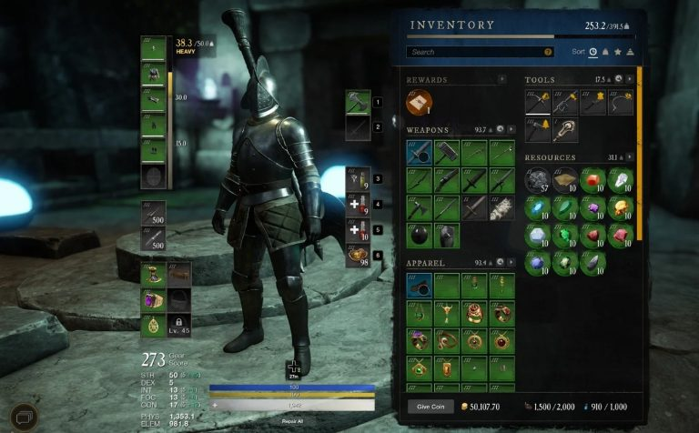Além disso, os bancos de dados em jogos digitais são fundamentais para a personalização da experiência do jogador. Eles permitem a criação de experiências de jogo personalizadas através da análise dos dados dos jogadores, compreendendo seus comportamentos e preferências.
Essa análise pode ser utilizada para aprimorar o jogo, ajustando-o às necessidades e gostos dos usuários. No contexto de jogos, os Sistemas de Gerenciamento de Banco de Dados (SGBDs) desempenham um papel crucial na armazenagem e manipulação de dados.
Vamos explorar quatro SGBDs populares - SQLite, Firebase, PostgreSQL e Amazon DynamoDB - analisando brevemente cada um deles e discutindo seus pontos fortes e fracos.
SQLite é um SGBD leve que é incorporado diretamente no programa. Não requer um servidor separado de banco de dados e é amplamente utilizado em aplicações móveis e jogos para armazenar dados localmente.
Firebase, oferecido pelo Google, é uma plataforma para o desenvolvimento de aplicações web e móveis, que inclui um banco de dados em tempo real e um banco de dados baseado em documentos (Firestore).
PostgreSQL é um poderoso SGBD objeto-relacional de código aberto, conhecido por sua robustez, extensibilidade e conformidade com padrões SQL.
Amazon DynamoDB é um serviço de banco de dados NoSQL oferecido pela Amazon Web Services, projetado para oferecer desempenho em escala com latência mínima.
Cada um desses SGBDs têm características únicas que os tornam adequados para diferentes tipos de jogos e requisitos de desenvolvimento. A escolha do SGBD certo dependerá das necessidades específicas do jogo, como escala, tipo de dados e operações necessárias, além de considerações de custo e infraestrutura.
Agora, para testar os seus conhecimentos, responda a seguinte questão:
QUESTÃO 1
Verdadeiro ou Falso
Firebase, DynamoDB e PostGreSQL, são exemplos de SGBDs que podem ser usados no desenvolvimento de jogos.
O acesso a dados refere-se ao processo de recuperação, manipulação, inserção e atualização de dados armazenados em sistemas de armazenamento, como bancos de dados. Neste contexto, um Sistema de Gerenciamento de Banco de Dados (SGBD) é crucial, pois oferece uma interface eficiente e segura para interagir com esses dados.
Utilizando um SGBD, é possível gerenciar de forma eficaz grandes volumes de informações, garantindo a integridade, confiabilidade e segurança dos dados.
Além disso, os SGBDs facilitam a organização e a recuperação de dados, permitindo que usuários e aplicativos acessem as informações de maneira rápida e conveniente, o que é essencial para suportar uma ampla gama de operações de negócios e decisões informadas.
A eficiência no acesso a dados proporcionada por um SGBD é, portanto, um elemento fundamental na infraestrutura de TI de qualquer organização, impactando diretamente na produtividade e no sucesso operacional.
Conectar projeto da Unity com o banco SQLite
Para alcançar o objetivo desta seção que é demonstrar a conexão de um projeto da Unity com um banco de dados SQLite, seguiremos alguns passos juntos:
O DB Browser for SQLite é uma ferramenta visual de código aberto projetada para criar, projetar e editar arquivos de banco de dados compatíveis com SQLite. SQLite é um motor de banco de dados relacional leve que é usado em uma ampla variedade de aplicações, incluindo muitos jogos e aplicativos móveis, devido à sua simplicidade e eficiência.
Para instalar o DB Browser, siga o https://sqlitebrowser.org/dl/, para acessar a página de Download. Nela, você deve escolher a versão do software que se adequa ao seu sistema operacional.
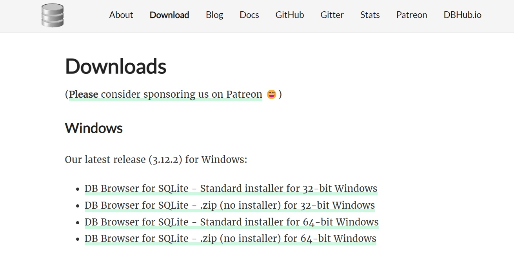Após baixar o instalador, execute sua instalação seguindo para as próximas etapas até que o processo de instalação tenha sido terminado.
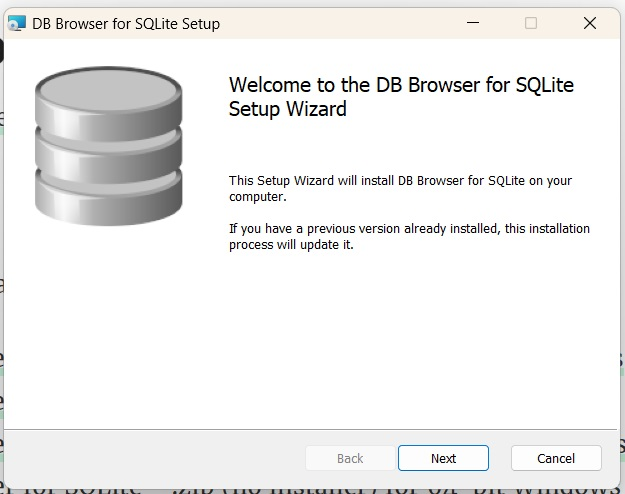Pronto, o DB Browser está devidamente instalado e nós podemos ir para a etapa de inserir o SQLite na Unity.
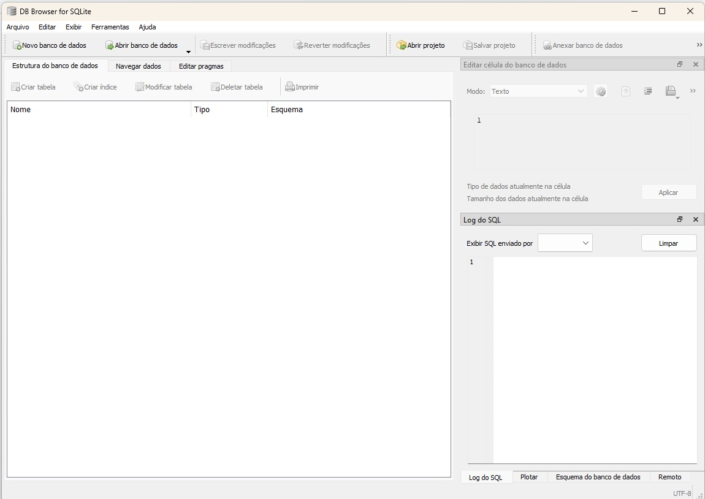Para cumprir mais esta etapa, temos que, primeiramente, acessar o website https://sqlite.org/download.html. Nessa página, vamos fazer o download dos binários pré-compilados para o sistema Operacional que você usa em seu computador.
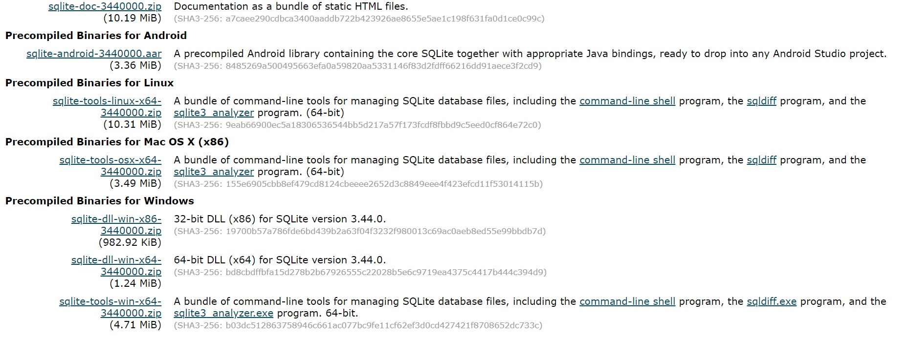Após feito o Download, extrair os arquivos do arquivo compactado.
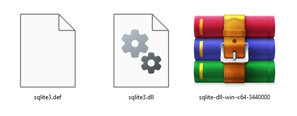Na Unity, você deve criar uma pasta chamada Plugins na aba Project. Após isso, arraste os arquivos sqlite3.def e sqlite3.dll para o diretório. Conforme apresentado na imagem abaixo.
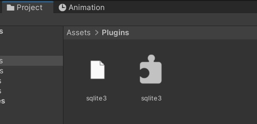Para finalizar a configuração, é necessário inserir o arquivo Mono.Data.Sqlite.dll na pasta Plugins. Para isso, basta seguir o caminho:
C:\Program Files\Unity\Hub\Editor\2022.3.4f1\Editor\Data\ MonoBleedingEdge\lib\mono\unityjit-win32.
Depois, só arrastar o arquivo Mono.Data.Sqlite.dll para a pasta Plugins.
Pronto, chegamos ao fim de mais uma etapa. Na terceira e última etapa, veremos como fazer, via código, a inserção de dados vindos da Unity, para um banco de dados SQL.
Para criar o script de conexão com o banco, vamos lançar mão de um poderoso recurso da Unity, as bibliotecas. As bibliotecas na Unity são conjuntos de funcionalidades ou códigos pré-escritos que você pode incluir em seus projetos para estender as capacidades padrão da Unity.
A maioria das bibliotecas para lidar com SGBDs já está disponível na Unity. No quadro abaixo:
| Biblioteca | Descrição |
|---|---|
| Mono.Data.Sqlite | Fornece uma interface para o banco de dados SQLite, que é um sistema de banco de dados SQL embutido que é muito popular para aplicações móveis e de desktop. |
| Mono.Data.Sql | Esta biblioteca fornece uma interface para o SQL Server, que é um sistema de gerenciamento de banco de dados relacional desenvolvido pela Microsoft. |
| Mono.Data.PostgreSql | Esta biblioteca fornece uma interface para o PostgreSQL, que é um poderoso sistema de gerenciamento de banco de dados relacional de código aberto. |
| Mono.Data.MySql | Esta biblioteca fornece uma interface para o MySQL, que é outro sistema de gerenciamento de banco de dados relacional de código aberto muito popular. |
| Mono.Data.Tds | Esta biblioteca fornece uma implementação do protocolo TDS (Tabular Data Stream), que é usado pelo SQL Server e pelo Sybase ASE. |
A seguir, assista ao vídeo no qual nós vamos, passo a passo, criar um código para inserção de itens de inventário de um jogo fictício. Para isso, temos que entender como a Unity usa bibliotecas para acessar os recursos de bancos de dados.
QUESTÃO 2
Verdadeiro ou Falso
O Banco de dados SQLite é o mais indicado para jogos que salvam seus dados na nuvem.
O armazenamento de dados é uma parte essencial do desenvolvimento de jogos, especialmente para salvar o progresso do jogador, configurações, e outros tipos de dados persistentes.
A Unity oferece várias técnicas para armazenar dados em arquivos, sendo as mais comuns o uso de PlayerPrefs, arquivos de texto e serialização.
PlayerPrefs é um sistema de armazenamento de dados simples e rápido disponibilizado pela Unity. É ideal para armazenar pequenos volumes de dados, como preferências do usuário, configurações de jogo, e pontuações.
PlayerPrefs armazena dados em um arquivo no sistema do usuário. A API fornece métodos para salvar e carregar três tipos de dados: int, float e string.
Locais de armazenamento por Sistema Operacional
No macOS, PlayerPrefs é salvo em:
~/Library/Preferences/com.ExampleCompanyName.ExampleProductName.plist
No Windows, PlayerPrefs é salvo em:
HKCU\Software\ExampleCompanyName\ExampleProductName
No Linux, PlayerPrefs é salvo em:
~/.config/unity3d/ExampleCompanyName/ExampleProductName.
Windows Store Apps, PlayerPrefs é salvo em:
%userprofile%\AppData\Local\Packages\[ProductPackageId]\LocalState\playerprefs.dat.
Digamos que temos um jogo no qual um personagem se movimenta lateralmente e deve coletar as moedas que aparecem na tela. Nada de extraordinário, não é? Acontece, que a cada vez que o projeto da Unity é executado, todas as ações do Player são também resetadas, nenhum ponto de score fica contabilizado entre execuções.
Agora, vamos demonstrar como usar o recurso PlayerPrefs para guardar as informações de Scores, assim, sempre que o jogo reiniciar, a pontuação do jogador é recuperada.
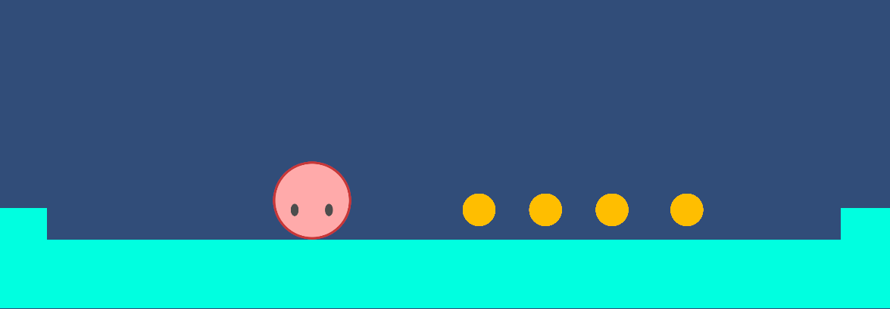Na configuração do player temos como componentes adicionais, um colisor (aqui um colisor circular), um Rigidbody 2D e dois scripts, os quais vamos ver em detalhes a seguir, um deles controla a movimentação, o outro, controla a coleta de moedas.
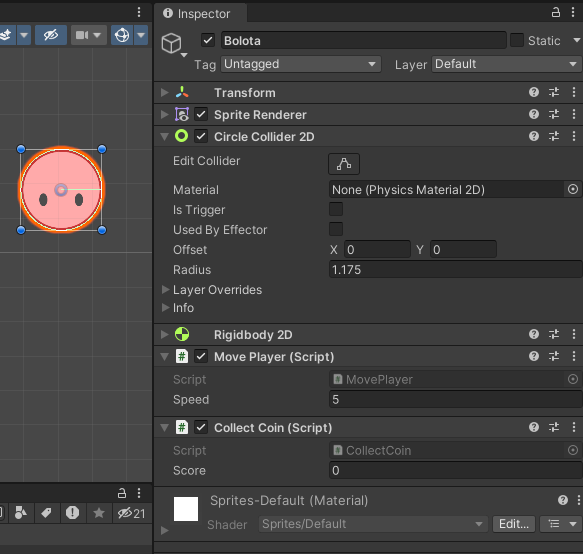A configuração da moeda tem duas alterações, uma é a inserção do Circle Collider 2D, deve ser marcado is Trigger, para que assim seja identificada a sobreposição entre a moeda e o player. Deve ser criada uma Tag “Moeda”, essa será atribuída a todas as moedas do jogo, e servirá para identificá-las no script.
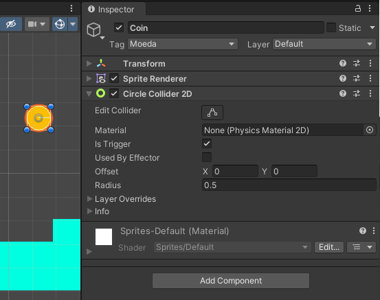O Script de movimentação do player deve ficar como se apresenta na figura a seguir.
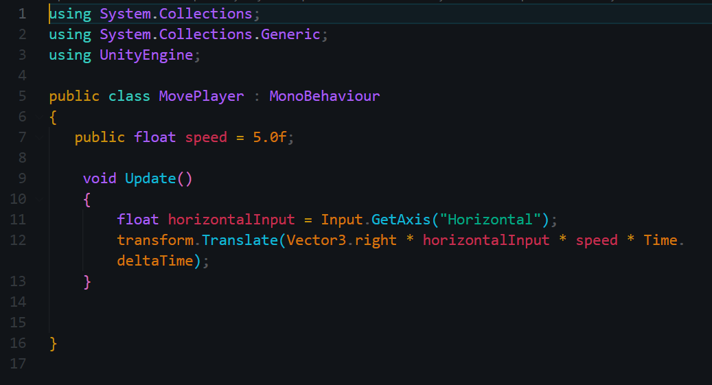O script de coleta das moedas deve ser escrito da seguinte forma: Nele chamamos a variável “score” no método Start(). Para que, assim que o jogo seja iniciado, o Score seja exibido no console da Unity.
Dentro da função OnTriggerEnter2D, a lógica é a seguinte, caso o player encoste em um outro objeto cuja tag é “Moeda”, o objeto é destruído, e o score é incrementado em mais um. Esta alteração é exibida na aba console.
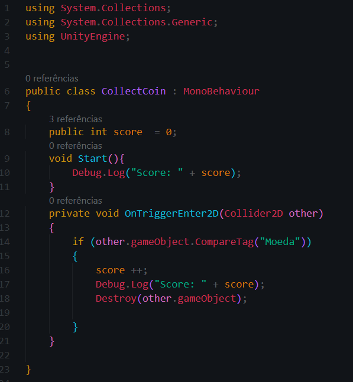Ao executar o jogo, quando o personagem coleta as moedas, esse registro é feito na variável “score” e é exibido no console, conforme pode ser visto na figura abaixo.
Entretanto, caso o jogo seja executado novamente, esse score é zerado, e a contagem reinicia.
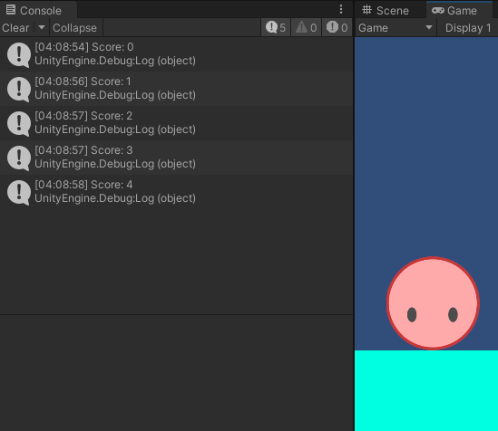Para garantir que o score da partida seja contabilizado e seja “lembrado” da próxima vez que o jogador executar o jogo, inserimos o PlayerPrefs como apresentado na figura abaixo, ou seja, no momento da colisão entre o player e a moeda.
Para demonstrar que o score ficou guardado, capturamos o conteúdo de Player Prefs no método Start.
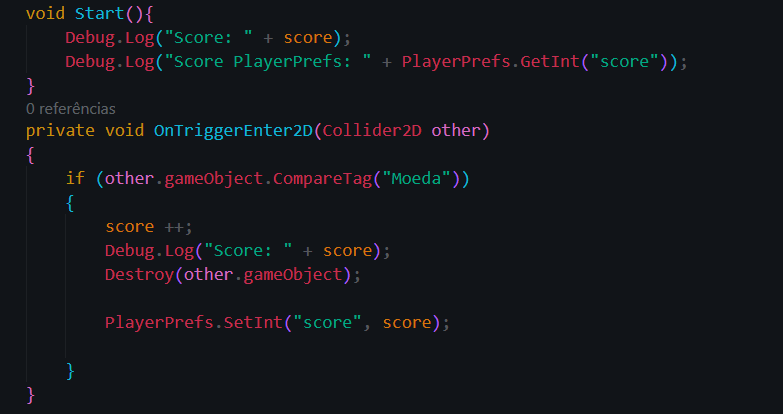Assim, mesmo que o jogo pare de ser executado e depois volte a rodar, o score ficou armazenado no arquivo do PlayerPrefs.
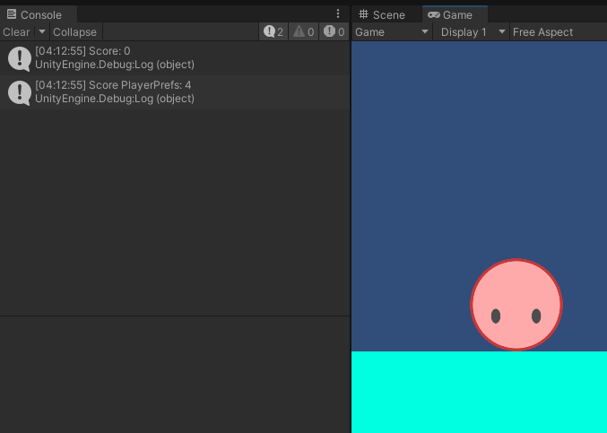Limitações - Não é seguro para dados sensíveis, pois os dados não são criptografados e podem ser facilmente acessados e modificados.
Não é adequado para armazenar grandes volumes de dados ou dados complexos.
A leitura e escrita de arquivos de texto é uma forma mais flexível e controlável de armazenar dados. Essa técnica é útil para salvar estruturas de dados mais complexas, como inventários ou configurações detalhadas do jogador.
Como Funciona - Pode-se usar System.IO para criar, ler e escrever em arquivos de texto, como .txt ou .json.
Considerações - É mais flexível que PlayerPrefs e permite o armazenamento de dados estruturados de maneira customizada. Requer mais gerenciamento manual, como a definição de caminhos de arquivos e o tratamento de exceções.
A serialização é o processo de transformar objetos em um formato que pode ser facilmente armazenado ou transmitido e posteriormente reconstruído. Na Unity, a serialização é comumente usada para salvar o estado do jogo, como a posição do jogador e o estado do inventário.
Como Funciona - A Unity oferece JsonUtility para serialização e desserialização de objetos em formato JSON. Também é possível usar serialização binária para uma abordagem mais segura e menos legível.
Considerações - Permite o armazenamento de dados complexos e de objetos inteiros. Requer atenção quanto à estrutura dos objetos a serem serializados, principalmente no que diz respeito à compatibilidade e à segurança de tipos.
QUESTÃO 3
Qual das seguintes opções é um banco de dados que pode ser usado para trabalhar com bancos de dados em um jogo?
E aí, vamos recapitular o que aprendemos nessa aventura pelo mundo dos bancos de dados em jogos.
Primeiro, descobrimos que o acesso a dados é como encontrar o tesouro escondido em um jogo, onde o tesouro são as informações que guardamos e recuperamos.
Os bancos de dados são os mapas que nos ajudam a encontrar esses tesouros, sejam eles pequenas bibliotecas pessoais como SQLite ou enormes bibliotecas online como Firebase.
Depois, exploramos o mundo dos arquivos, que são como os diferentes personagens, cenários e itens do nosso jogo. Cada um tem um papel a desempenhar, seja um script C# dando as ordens, um arquivo de imagem criando o visual ou um arquivo de som adicionando a trilha sonora.
E, claro, não podemos esquecer as bibliotecas e ferramentas, nossos superpoderes de desenvolvedor de jogos. Elas nos ajudam a criar coisas incríveis mais rápido e mais fácil, como um herói de jogo voando através de um nível.
Então, é isso aí, pessoal! Mantenham essas lições em mente enquanto criam seus próprios jogos épicos. Até a próxima!
QUESTÃO 4
Quais das opções é uma ferramenta que pode ser usada para trabalhar com bancos de dados em jogos digitais?